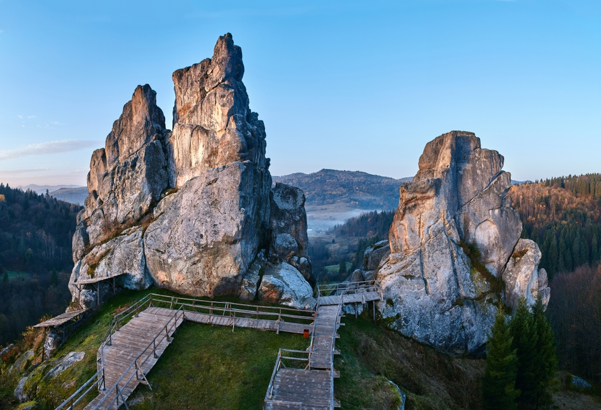
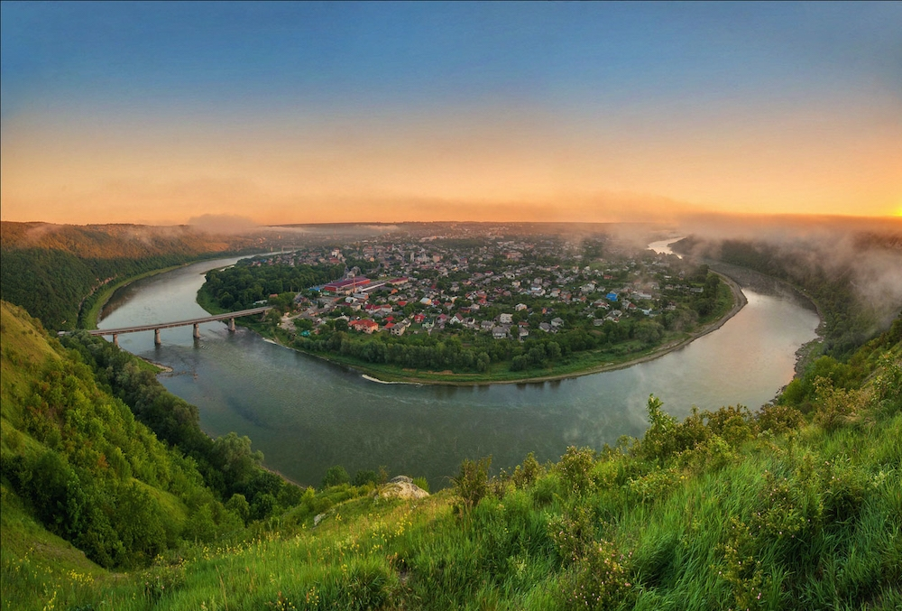

ЦІКАВІ МІСЦЯ УКРАЇНИ, ЯКІ ВАС ВРАЗЯТЬ
Щоб побачити печери, каньйони, рожеві озера та величезні скелі не треба їхати за кордон. В Україні є безліч цікавих та мальовничих місць. Зібрали для вас топові природні місця, які варто відвідати.
Оптимістична печера

Оптимістичну печеру відкрили у 1966 році, знаходиться вона у Борщівському районі Тернопільської області неподалік села Королівка. Це найдовша гіпсова печера у світі: довжина — близько 260 км. Вона досі повністю не досліджена, в експедиції сюди приїжджають спелеологи з усього світу. Всередині печери лабіринти, багато мінеральних утворень (кристалів, сталактитів, геліктитів) та навіть підземні озера. Подивитись є на що.
Потрапити на екскурсію та побачити усе на власні очі це цікаве місце може кожен охочий. Є офіційний сайт з усією необхідною інформацією: як доїхати, де жити, яке спорядження потрібно, фото та відео звіти. На сайті можна вибрати екскурсію, є різні рівні складності: найлегші ознайомчі екскурсії підійдуть навіть для дітей, також є маршрути середньої складності та екстремальні та довгі маршрути для досвідчених та витривалих.
Тустань

Тустань — наскельне місто-фортеця, яке було оборонним та адміністративним центром протягом 9-15 століть. Це однозначно одне з найцікавіших місць Україні. Знаходиться Тустань неподалік села Урич у Сколівському районі Львівської області. Заснували місто племена хорватів, потім його завоювали поляки, а з кінця 16 століття Тустань почала занепадати та згодом залишились лише кам’яні основи фортеці. Завдяки дослідженням та археологічним розкопкам вченим вдалось відновити графічну реконструкцію фортеці з точністю майже 90%.
У 1994 році задля збереження наскельного комплексу було створено національний історико-заповідний комплекс, зараз це популярне туристичне місце. З 2012 року тут щороку проводиться фестиваль української середньовічної культури «Ту Стань!». Місце справді дуже гарне й захоплююче. З оглядового майданчика на скелях відкривається неймовірно красивий краєвид. А навколо є зручний пішохідний маршрут. До речі, в нас є готовий маршрут Західною Україною, до якого ми включили Тустань.
Вухатий Камінь


Вухатий Камінь — це мальовнича гора у Карпатах у масиві Чорногори, що знаходиться у Верховинському районі Івано-Франківської області, висота — 1864 м над рівнем моря. Гора цікава тим, що на вершині є скелі чудернацької форми — улюблене місце для перепочинку та фотографій усіх туристів. А ще з Вухатого Каменя відкривається неймовірно гарний краєвид на Карпати. Через гору проходить маршрут з села Дземброня на вершину Чорногірського хребта, також через Вухатий Камінь можна пройти на гору Піп Іван. Ще одна атракція — Дзембронські водоспади, які знаходяться на північно-східному схилі гори.
Скелі Довбуша

Скелі Довбуша — надзвичайно красивий скельно-печерний комплекс на висоті 668 метрів розташований неподалік від села Бубнища в Івано-Франківській області. Скельні виступи утворились тут приблизно 70 мільйонів років назад, їх висота сягає 80 метрів, ширина — 200 м, довжина — майже 1 кілометр.
У 17-18 столітті у скелях створили табір опришки (народні повстанці), тут досі залишились сліди рукотворних печер, у яких вони жили. Назва також походить ще з тих часів — Олекса Довбуш був ватажком опришків у Карпатах. Зараз Скелі Довбуша популярне туристичне місце. А ще це улюблене місце скелелазів, тут вони регулярно проводять свої змагання.
Бакота

Бакота вражає своїми краєвидами та історією, це місце не надто популярне серед туристі, але дуже цікаве та гарне. Село Бакота затопили під час будівництва Дністровської ГЕС, а на його місці утворилась Бакотська затока, яка приваблює все більше туристів завдяки неймовірно гарним краєвидам. Бакоту називають місцем сили: археологічні розкопки свідчать, що у цих місцях колись було багато язичницьких храмів, святилищ та кургани з жіночими похованнями.

Бакота знаходиться на території Національного природного парку «Подільські Товтри», туристичної інфраструктури тут поки що немає. Тож ви не знайдете тут будинків для комфортного проживання та магазинів, а якщо хочете залишитись тут на ніч, беріть із собою намет і провізію. Доїхати сюди своїм ходом можна на авто або велосипедах, також можна на маршрутці (потім ще трохи пройти пішки) або на екскурсійному автобусі з Кам’янця-Подільського.
Дністровський каньйон
Каньйон знаходиться на межі чотирьох областей: Івано-Франківської, Хмельницької, Чернівецької та Тернопільської. Село Заліщики знаходиться у Тернопільській області.
Дністровський каньйон знаходиться одразу у чотирьох областях, це найдовший каньйон в Україні — довжина 250 км. Усі знають його в основному за оглядовим майданчиком на Заліщики: село знаходиться на півострові, а по колу з трьох сторін його омиває Дністер (на першому фото).

Але це не єдине цікаве місце України, яке варто подивитись у каньйоні. Навколо річки є мішані та соснові ліси, кілька природних заповідників та дуже давня пам’ятка природи — скелі девонського геологічного періоду, вік яких понад 400 мільйонів років. У Дністрі живе понад 40 видів риб, на території каньйону багато рідкісних видів комах. Особливої уваги вартий Джуринський водоспад, що знаходиться на річці Джурин у Заліщицькому районі Тернопільської області. Висота водоспаду 16 м, це найбільший не гірський водоспад в Україні. Ще одна популярна туристична розвага у каньйони — сплав по Дністру, підійде і початківцям, і професіоналам.
Актівський каньйон
Актівський каньйон — природний комплекс з гранітних скель та валунів площею 250 гектарів, частина національного парку «Бузький Гард» та зовсім нетипова природна зона для українського степу. Це місце називають українським Гранд-Каньйоном, пейзажі тут гарні і незвичайні: річка з містичною назвою Мертвовод протікає серед вузьких ущелин та скель, висота яких місцями досягає 50 метрів (як двадцятиповерховий будинок).

Історія каньйону овіяна легендами: начебто колись скіфи проводили тут свої містичні ритуали, тому місцевість ніби то має особливу енергетику. Зараз каньйон популярна туристична локація, з найближчих великих міст — Одеси, Херсон, Миколаїв — сюди постійно возять групи на екскурсії. Часто у маршрут таких екскурсій також входить відвідування Арбузинського каньйону та Трикратського лісу. Всі ці місця можна відвідати самостійно – ось тут ми описали готовий маршрут каньйонами Миколаївщини.
Лемурійське озеро

Одне з найгарніших і незвичайних місць України – рожеве озеро. Лемурійське озеро на Херсонщині називають українським Мертвим морем: солоність озера сягає позначки 300 грамів солі на літр води, що на 50 грамів більше, ніж у Мертвому. Рожевий колір з’являється завдяки водоростям Дуналіелла, які під дією сонця виробляють речовину, яка фарбує воду: чим спекотніше літо, тим більш насичений рожевий колір має вода.

У озера цікава історія: у 1969 році в озеро Сиваш впав радянський літак і утворив дуже глибоку яму, яка почала наповнюватись водою набагато солонішою, ніж у Сиваші. А назву озеро отримало на честь міфічного континенту Лемурія, який начебто колись затонув в Індійському океані. Лемурійське озеро приваблює багато туристів завдяки своєму незвичайному вигляду та лікувальній воді. Відвідування Лемурійського озера можна поєднати з іншими цікавими місцями Херсонської області – ось тут готовий маршрут Півднем України.
Протяті Камені та Соколине око
Протяті камені — мальовничий скельний масив в Покутсько-Буковинських Карпатах, неподалік від перевалу Німчич у Чернівецькій області. Скелі утворились з пісковика, на деяких з них багато отворів різної величини — звідси й назва протяті. Одна з найцікавіших скель у масиві — Соколине око. Називається вона так, тому що в результаті ерозії на висоті приблизно 40 метрів утворилась кам’яна арка, що нагадує око. У підніжжі скелі також є невелика печера.

Під час мандрівки до Протятих каменів можна також відвідати Буковинські водоспади, які знаходяться неподалік. Всього тут є сім водоспадів висотою від 3,5 до 19 метрів: Ковбер, Сич, Нижній Гук, Ворота, Середній Гук, Великий Гук (найбільший), Верхній Гук. Це дуже мальовниче та цікаве місце для відвідування.
Грот Прийма

Грот Прийма знаходиться посеред лісу недалеко від міста Миколаїв у Львівській області. Грот доволі мало відомий серед туристів, але насправді це дуже визначна пам’ятка археології європейського значення. Цій печері понад 45 тисяч років, археологи знайшли тут сліди поселення та артефакти, що належали неандертальцям. Зовсім поряд з Приймою є ще кілька цікавих місць, які можна відвідати в рамках вихідного дня.